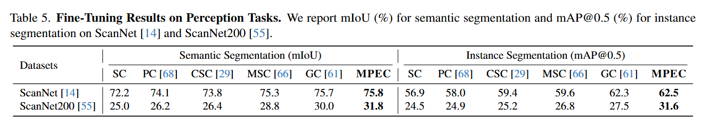
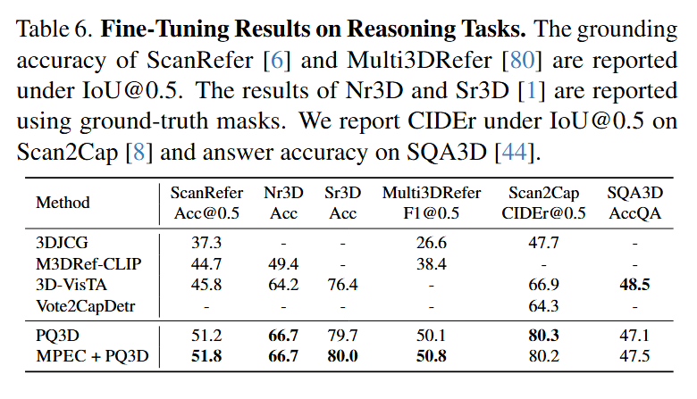
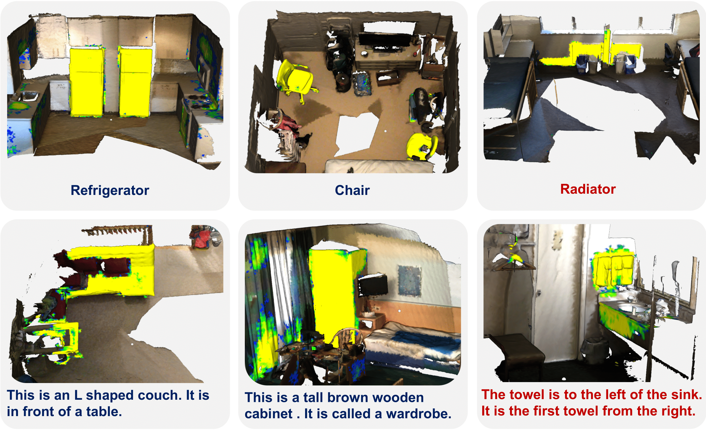
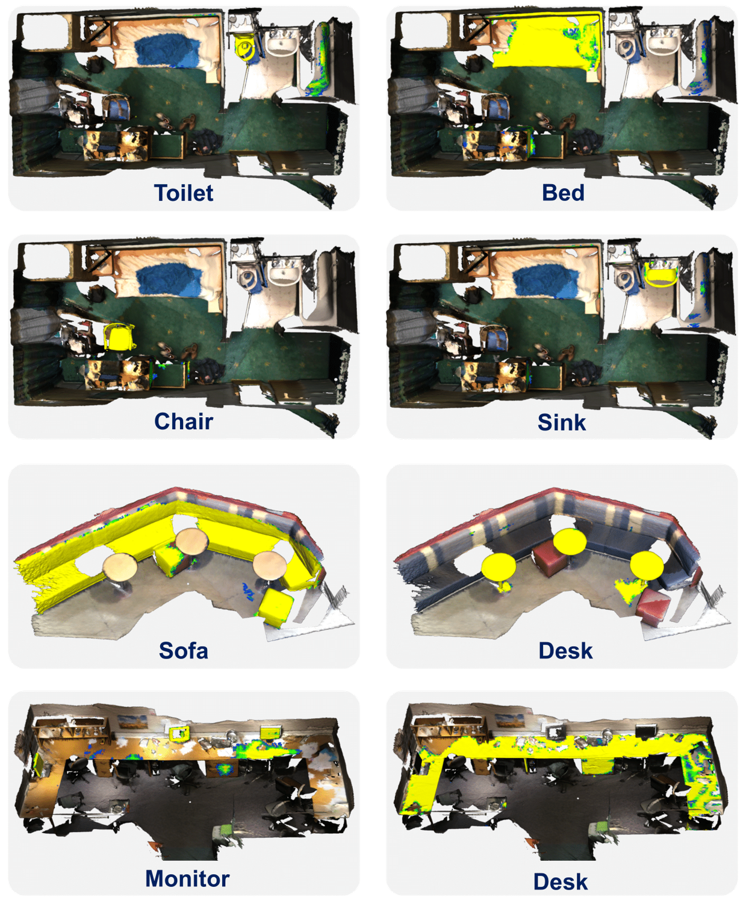

Open-vocabulary 3D scene understanding is pivotal for enhancing physical intelligence, as it enables embodied agents to interpret and interact dynamically within real-world environments. This paper introduces MPEC, a novel Masked Point-Entity Contrastive learning method for open-vocabulary 3D semantic segmentation that leverages both 3D entity-language alignment and point-entity consistency across different point cloud views to foster entity-specific feature representations. MPEC improves semantic discrimination and enhances the differentiation of unique instances, achieving state-of-the-art results on ScanNet for open-vocabulary 3D semantic segmentation and demonstrating superior zero-shot scene understanding capabilities. Extensive fine-tuning experiments on 8 datasets, spanning from low-level perception to high-level reasoning tasks, showcase the potential of learned 3D features, driving consistent performance gains across varied 3D scene understanding tasks.




@inproceedings{wang2025masked,
author = {Wang, Yan and Jia, Baoxiong and Zhu, Ziyu and Huang, Siyuan},
title = {Masked Point-Entity Contrast for Open-Vocabulary 3D Scene Understanding},
booktitle = {CVPR},
year = {2025},
}